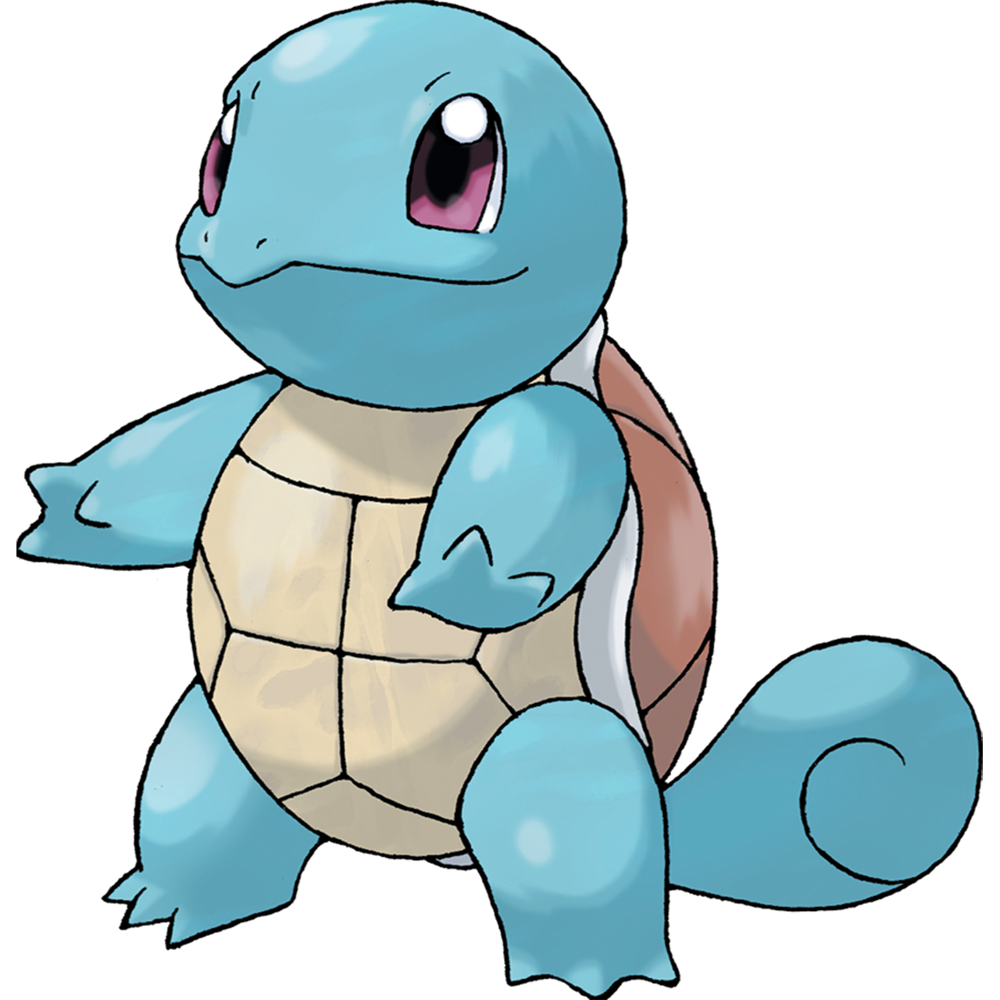
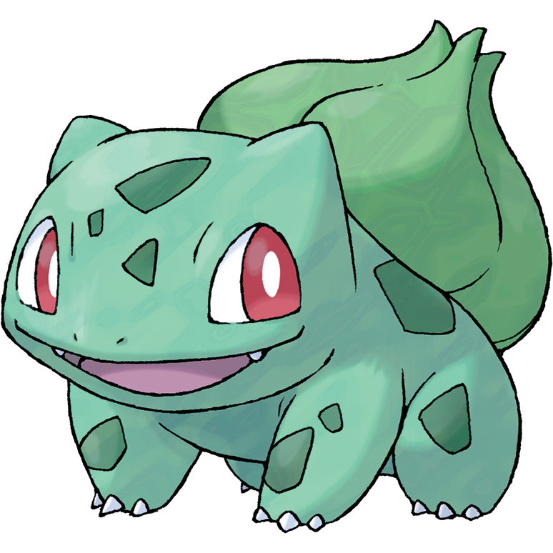
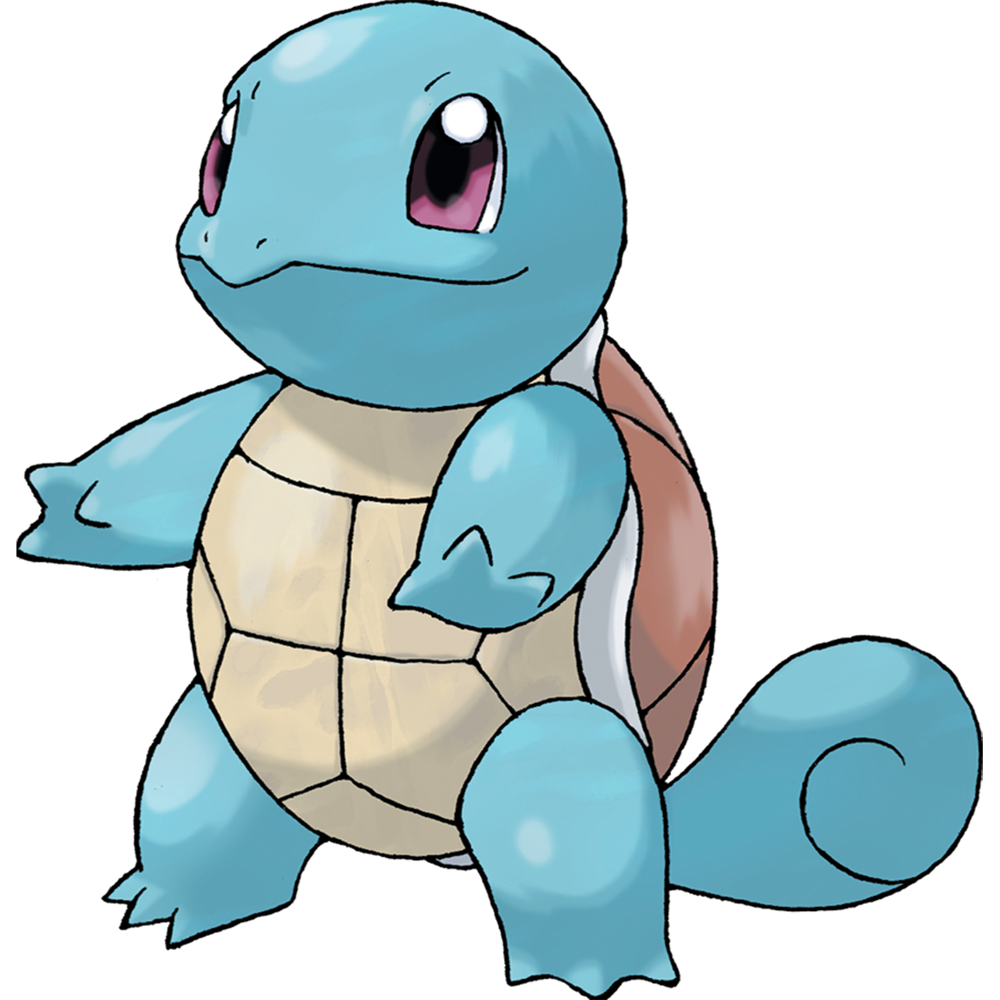
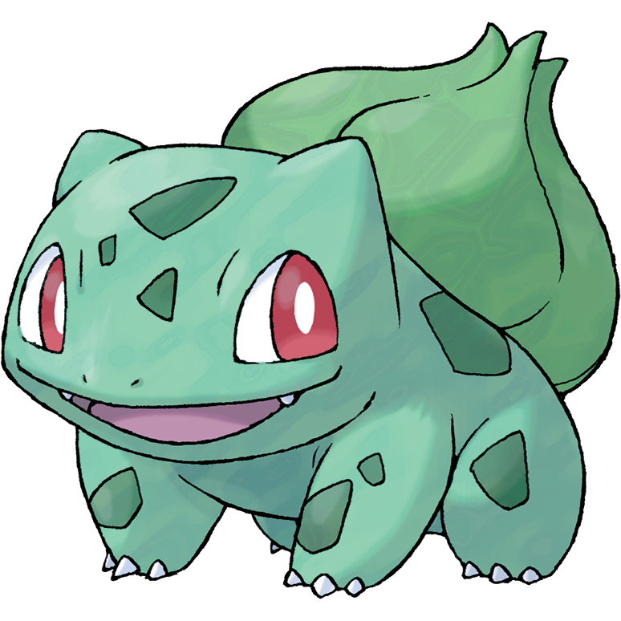

Charmander: pokemon tipo fuoco che evolve in charmeleon e charizard

Squirtle: pokemon tipo acqua che evolve in warturtle e blastoise
Bulbasaur: pokemon tipo erba che evolve in ivysaur e venosaur
Ricordati di catturarli tutti!
Charmander: pokemon tipo fuoco che evolve in charmeleon e charizard
Squirtle: pokemon tipo acqua che evolve in warturtle e blastoise
Bulbasaur: pokemon tipo erba che evolve in ivysaur e venosaur
catturali tutti daaaaai